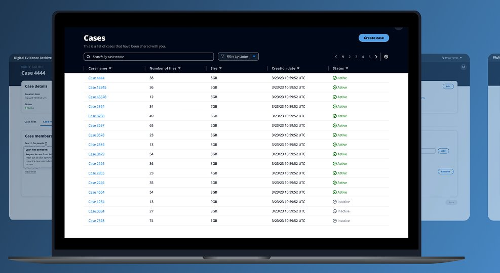
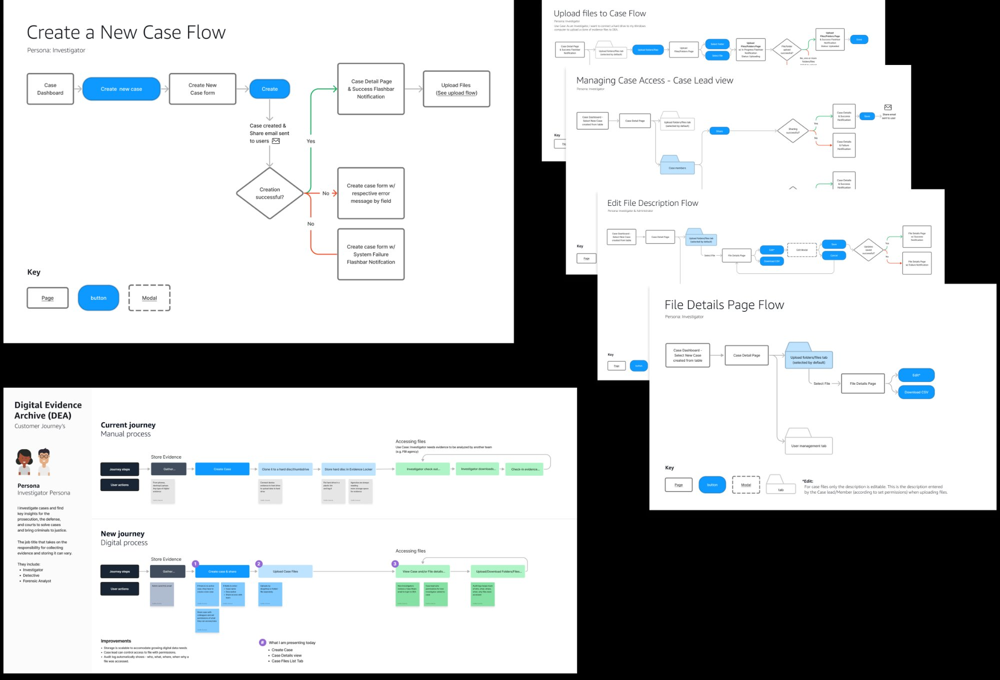
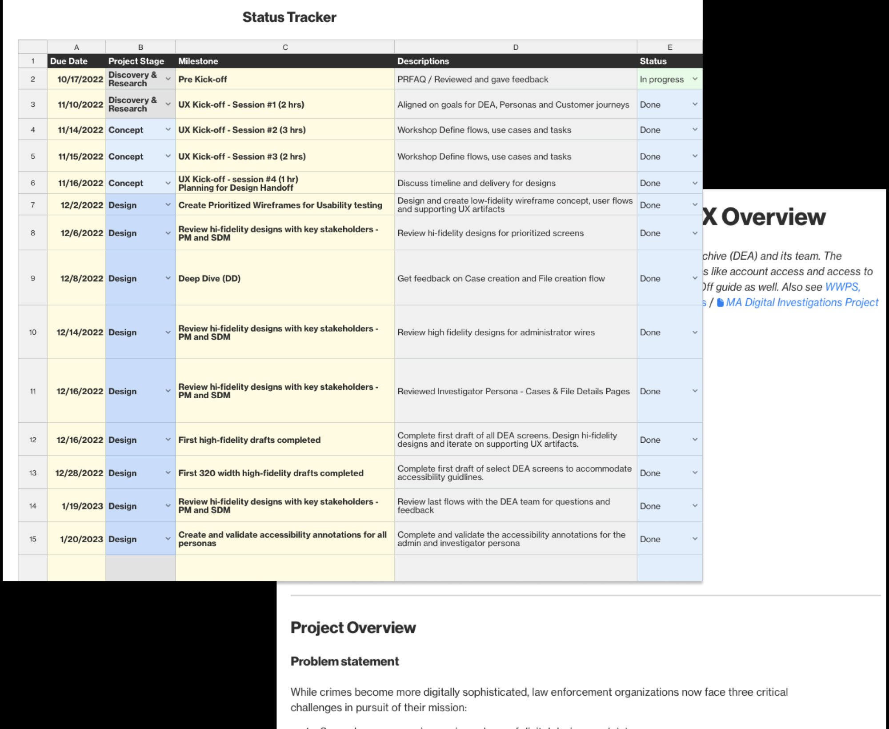
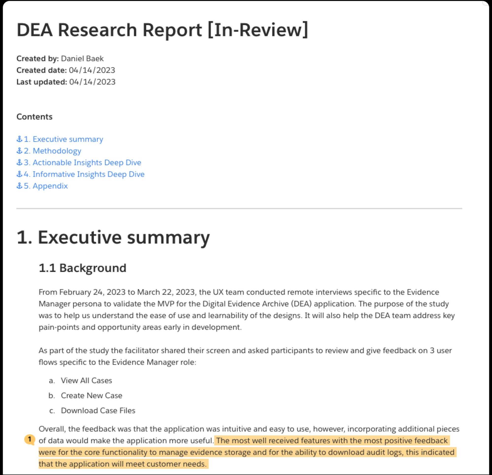
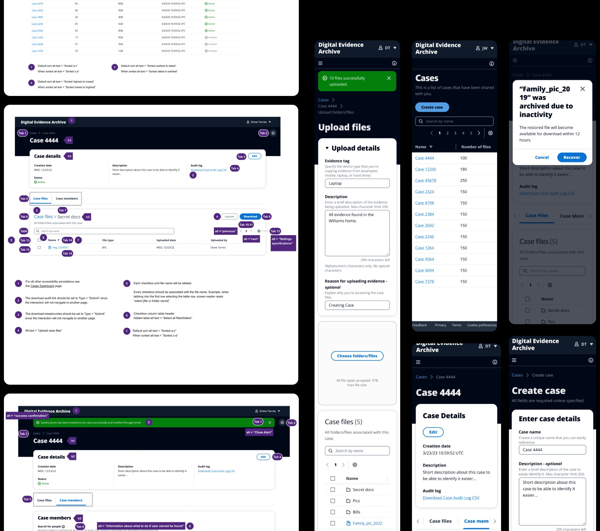
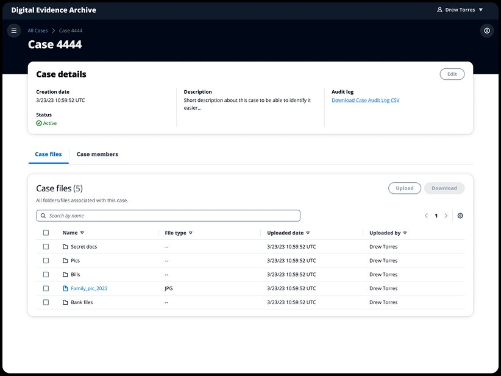
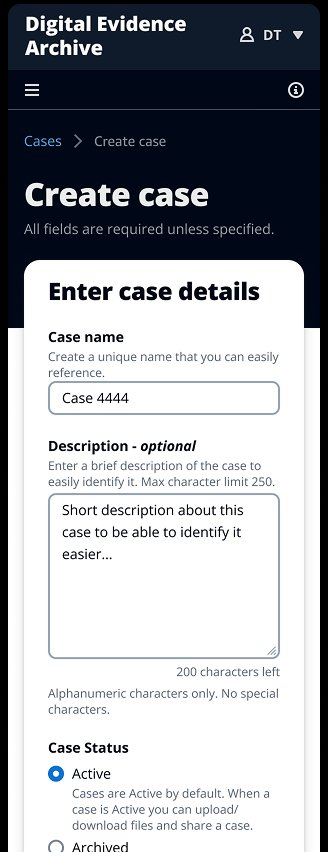
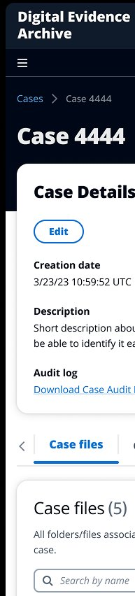

Overview
The Problem
As crime becomes more digitally sophisticated, law enforcement organizations face a growing challenge: their evidence storage systems were built for physical evidence. Digital files — videos, photos, documents — were being shoved into workflows that were never designed for them.
Investigators were spending significant time managing files manually across disconnected systems, with no clear chain of custody, no standardized structure, and no accessible audit trail. The question driving the project: how might we optimize digital evidence storage for investigators worldwide?
The Digital Evidence Archive is a web-based application, built within AWS, that gives law enforcement a purpose-built system to securely store, organize, and manage digital evidence across cases.

Research
Understanding the Users
I began with user flow identification — meeting with 6 users across 30-minute sessions to map both the current state and the desired future state. This gave the team a shared foundation and ensured alignment across all stakeholders before a single screen was designed.
From there, I led user validation research across 3 user groups and 12 sessions of 60 minutes each. The research surfaced the real complexity of the problem: diverse team structures (Investigators, Detectives, Admins, and Hybrid roles), varying expectations around hash numbers and case naming conventions, and gaps in how file size versus count was being communicated.
These findings shaped every design decision that followed — from navigation structure to the evidence tagging model.
12
Validation sessions
3
User groups
14
Research insights
2
Research reports


Process
From Research to Release
I owned the design process end to end — from early research and journey mapping through high-fidelity wireframes, accessibility annotations, and handoff. A structured design roadmap kept the work on track, outlining review dates, deliverables, resources, and deadlines across multiple stakeholder groups.
Working in close partnership with engineering, TPMs, and external experts in research and accessibility, every artifact was reviewed and validated before moving forward. I also collaborated closely with experts in the field during dedicated office hours sessions alongside development and product management.
01
Discovery & Research
User interviews, current and future state journey mapping with 6 participants. 12 validation sessions across 3 user groups established alignment before design began.
02
Design & Validation
Low-fidelity wireframes and user flows for usability testing. High-fidelity designs reviewed across multiple stakeholder sessions with PMs and engineering leads.
03
Accessibility & Handoff
Full accessibility annotations for all personas, with 320-width variations to support visually impaired users. Validated against WCAG 2.1 with accessibility specialists.


The Solution
A Unified Evidence System
The Digital Evidence Archive gives investigators a clear, structured system to create cases, upload and organize digital files, manage case access across team members, and maintain a complete audit trail of every action taken.
The interface was designed to work across both desktop and mobile, accommodating the range of devices used in the field. The result was a system that cut manual file handling by roughly 45 minutes per case, time that investigators could redirect toward the actual work of solving crimes.





Key Decisions
Design Choices
Accessibility first
Treating WCAG compliance as a design constraint, not a checklist
Accessibility annotations were built into every artifact from day one. 320-width variations were created for all high-fidelity screens to ensure the product worked for visually impaired users — a non-negotiable for a public-facing government tool.
Team structure diversity
Designing for four distinct user roles within a single system
Research revealed that law enforcement teams aren't uniform. Investigators, Detectives, Admins, and Hybrid roles all had different access needs and workflows. The permission model was designed to accommodate all four without requiring four separate interfaces.
Data architecture
Resolving conflicting mental models around file structure
Users had different expectations around hash numbers, case naming conventions, and whether file count or file size was the meaningful metric. Aligning these into a consistent data model — validated with users during research — was one of the most consequential design decisions on the project.
~45
Minutes saved per case
Global
Police agency adoption
Open
Source release
WCAG
2.1 compliant
Lessons Learned
What I Took Away
01
Avoid trying to come up with solutions on the spot during calls. Taking time to process feedback before reacting leads to better design decisions and more confident communication with stakeholders.
02
Understand the audience for each artifact. A journey map for a PM reads differently than one for an engineer. Tailoring artifacts to who will use them makes collaboration faster and more effective.
03
Stay committed to the structure and process. On a project with many stakeholders and moving parts, the design roadmap wasn't overhead — it was what kept the work moving and the team aligned.